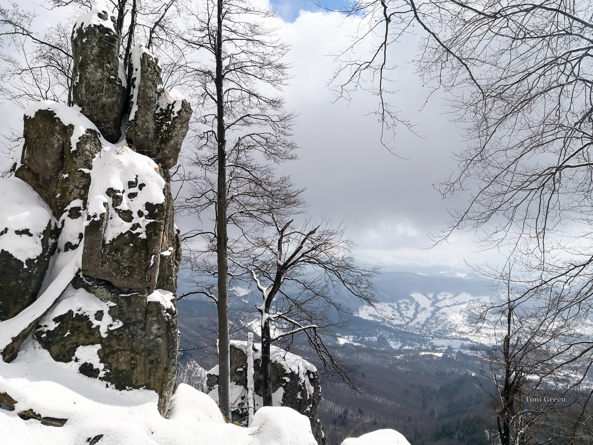
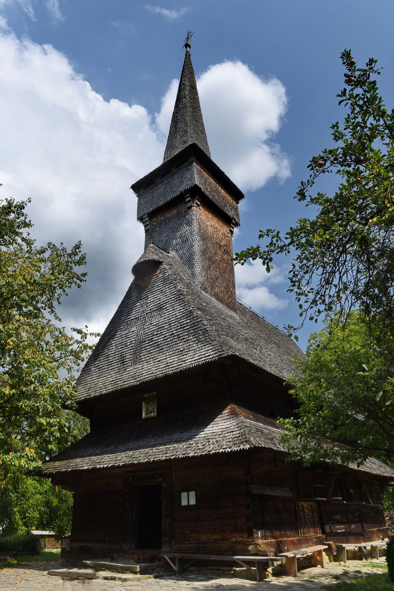
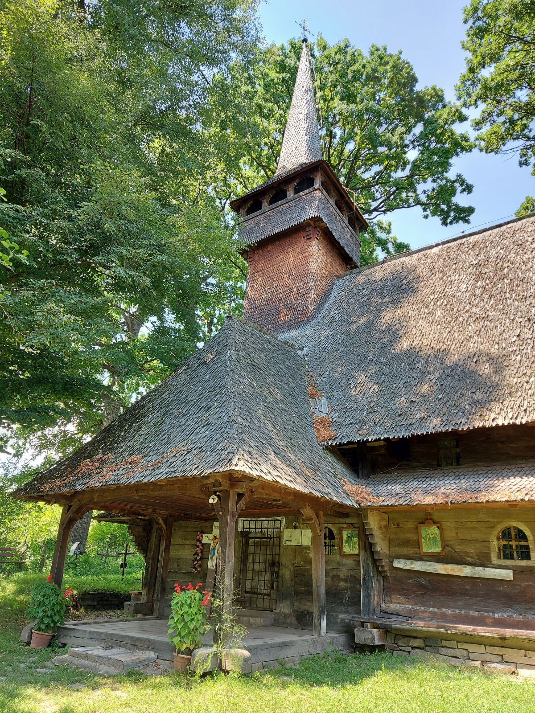
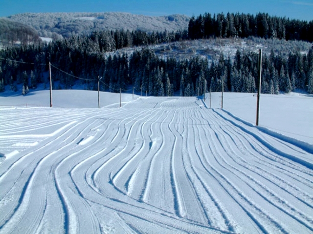
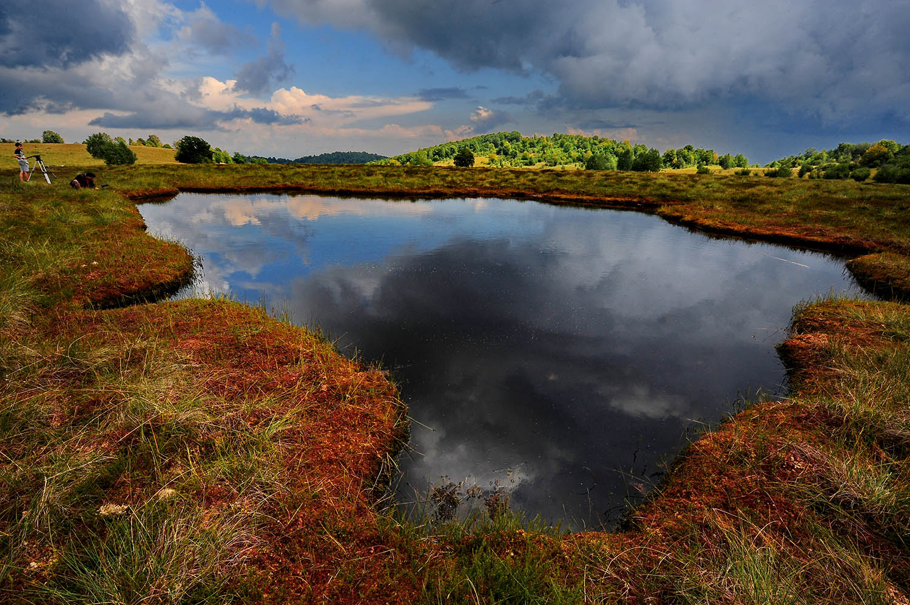
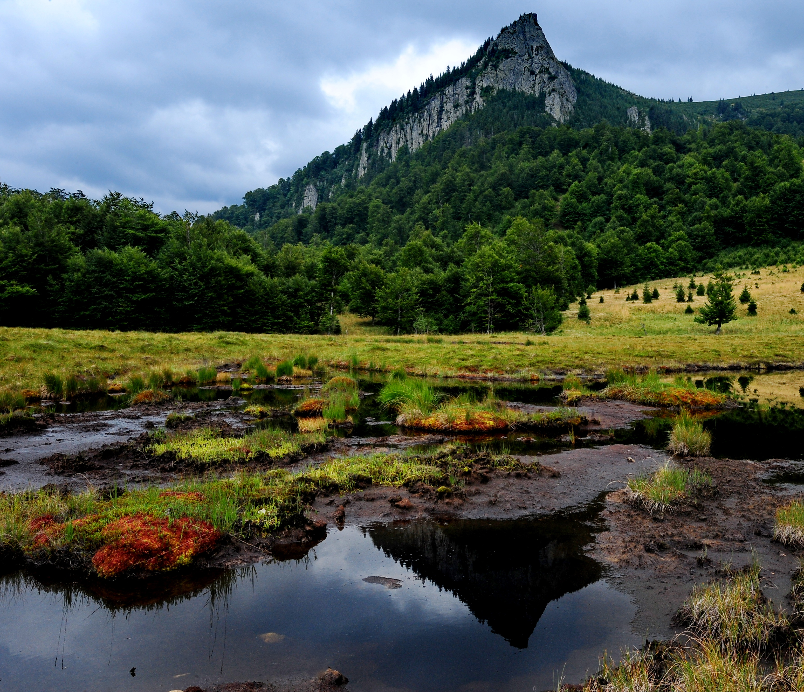
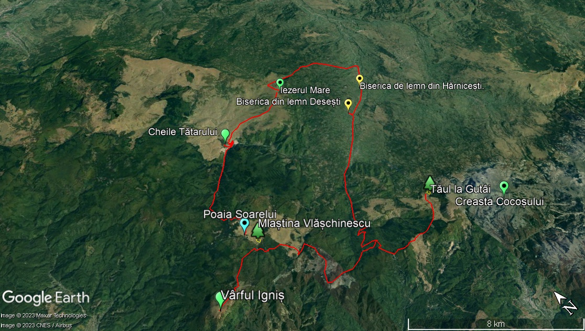

A ajunge în Desești și a te limita doar la această localitate ar fi o mare pierdere. Zona este înconjurată de o multitudine de comori naturale și culturale care așteaptă să fie descoperite de turiștii curioși și dornici de experiențe autentice. Printre acestea se numără:
Cheile Tătarului reprezintă o rezervație naturală de tip hidro-geologic (15 ha) situată la 30 km de Baia Mare. Se întind pe o lungime de câteva sute de metri, fiind singurele chei din andezit din țară. Cheile Tătarului reprezintă un defileu unic ce se profilează printre stâncile înalte, ceea ce îi conferă un aspect sălbatic și pitoresc.

Sursa imaginii: Link
Vârful Igniș este un loc ideal pentru pasionații de natură pentru a se răsfăța cu activități precum drumeții, fotografie, pescuit la păstrăv în văi, ciclism și parapantă. Pentru naturaliști, zona este un tezaur de biodiversitate. Există rezervații naturale, precum Iezerul Mare, Mlaștina Poiana Brazilor și Tăul lui Dumitru, care găzduiesc specii relicte glaciare. Exploratorii pot întâlni vipere negre și, dacă au noroc, pot fi martorii zborului maiestuoșilor vulturi de munte, care se înalță pe cerul senin. În plus, regiunea oferă oportunități de a observa bivoli și cai.

Sursa imaginii: Link
Biserica de lemn „Cuvioasa Paraschiva” din Desești a fost construită în jurul anului 1780, reprezintă un exemplu maramureșean de artă murală postbizantină și este inclusă pe lista Patrimoniului Mondial UNESCO.

Sursa imaginii: Link
Biserica de lemn din Hărnicești, comuna Desești, județul Maramureș figurează pe lista monumentelor istorice. Cu hramul „Nașterea Maicii Domnului”, biserica se găsește pe ruinele unei vechi mănăstiri. Biserica de lemn "Nașterea Maicii Domnului" are o istorie bogată și trăsături arhitecturale unice. Planul său dreptunghiular a suferit mai multe modificări arhitecturale de-a lungul timpului, rezultând aspectul său actual. Unele surse sugerează că a fost construită în 1700, în timp ce altele propun 1728 sau 1770.

Sursa imaginii: Link
Pârtia de ski Poiana Soarelui are un grad de dificultate mic, lungimea sa este de 365 m, diferența de nivel de 50 m și beneficiază de iluminare nocturnă, dar nu și de zăpădă artificială. Altitudinea la plecare este de 1.025 m, iar la sosire de 950 m.

Sursa imaginii: Link
Mlaștina Iezerul Mare (Tinovul Hărniceștilor) este o arie protejată de interes național situată în județul Maramureș. Se încadrează în categoria IV IUCN, care o desemnează ca rezervație naturală floristică și faunistică, pe 5 de hectare. Este situată la o altitudine de 1.014 metri și se găsește în apropierea satului Hărnicești, de-a lungul drumului național DN18 care leagă Baia Mare de Sighetu Marmației. Rezervația naturală a fost înființată și protejată în anul 2000 și se suprapune cu situl Natura 2000 - Igniș.

Sursa imaginii: Link
Creasta Cocoșului este o formațiune naturală compusă din andezit, care este un tip de rocă vulcanică proeminentă, situată în Munții Gutâi din regiunea Maramureș din Carpații Orientali ai României. Este al doilea vârf ca înălțime din Munții Gutâi care atrage atenția pentru forma sa unică și captivantă.
Tăul Chendroaiei, cunoscut și sub numele de Tăul de la Gutâi, este un lac situat sub Creasta Cocoșului, pe versantul nordic al Munților Gutâi. Zona mlăștinoasă este mărginită de pășune și de marginea pădurii. În sit se găsește un lac. Tăul Chendroaiei este cunoscută pentru peisajul său pitoresc. Stâncile abrupte ale Crestei Cocoșului se reflectă în apele lacului, făcându-l un loc fotogenic. Zona are un mare potențial pentru fotografie, datorită peisajelor pitorești, înconjurat de stânci abrupte și floră și faună diversă.

Sursa imaginii: Link
Cheile Tătarului – Vlășchinescu
Cabana Runcu-Piesca, sub culmea Pleșca Mare și cheile Tătarului
Pasul Paltin, Izvorul lui Pintea, vârful Gutâiul Mare (pe poteca, 5-6 ore)
Izvoare – Pleșca – Cheile Tătarului – Baraj Runcu – Mara

Harta principalelor obiective de vizitat în zona Desești